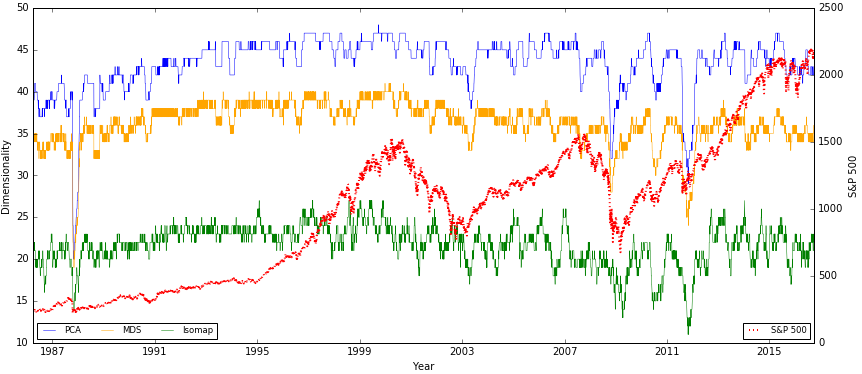
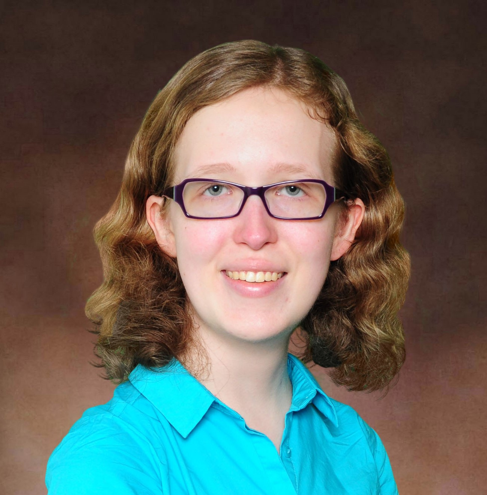
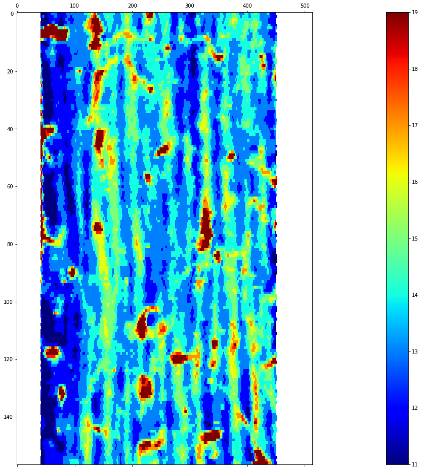
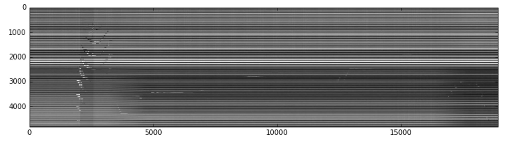
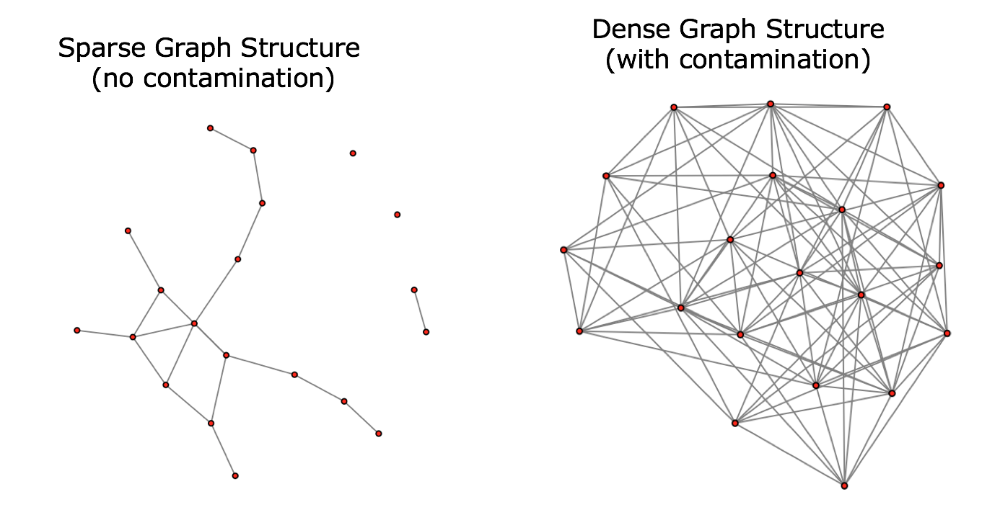
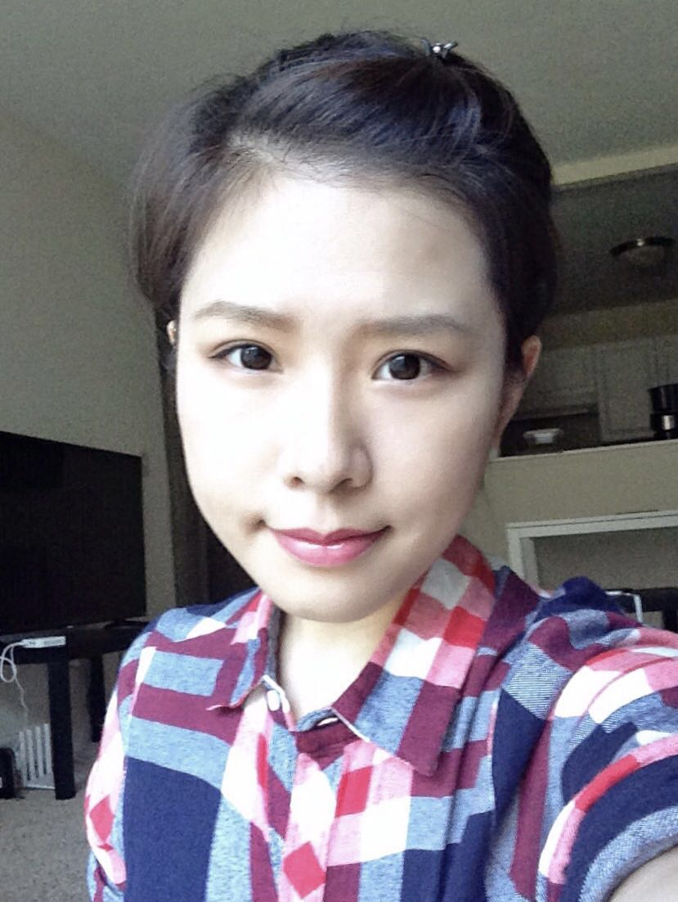
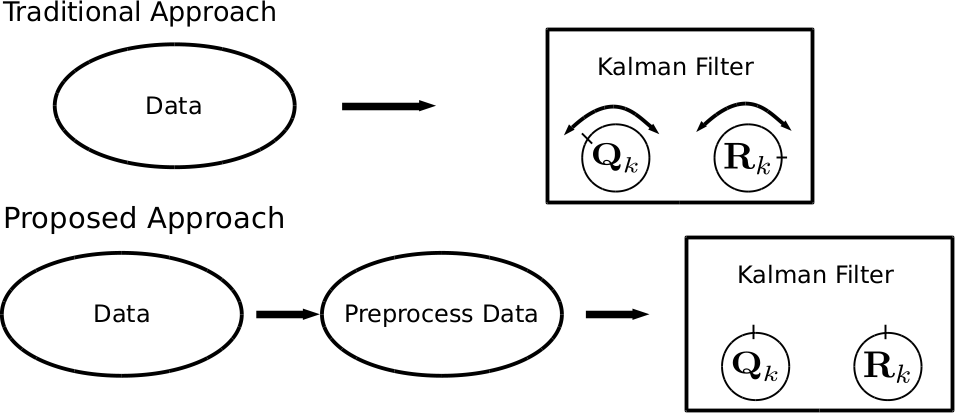
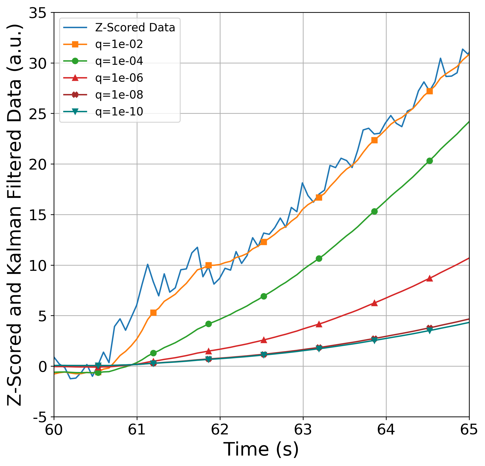
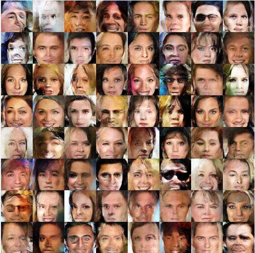

Projects
Nitish Bahadur
Data Science PhD Student
Non-linear dimenionality reduction techniques in Finance
 Financial markets are high-dimensional, complex, and constantly changing. Under stressed market conditions the changes are amplified. Financial market can be represented by an underlying manifold in low-dimension that captures the inherent characteristics of the high-dimensional data. Using Russell 3000 constituents and both geodesic and informational geometric schemes, we determine the temporal dimensionality of US market. Further, we use rate of change in US market dimensionality over 30 years to detect early warning system. Additionally, using intra-day prices we zoom into temporal dimensionality around large market movements to detect early perturbation in financial system. We not only study the benefit of using non-linear techniques such as Isomap, over linear technique such as PCA or Multidimensional Scaling but also compare and contrast the use of geodesic distance and informational geometric distances.
Publications:
Click Here for Paper
Lauren Baker
Industrial Mathematics MS-Professional Project Student
Conpressive Sensing on Carbon Nanotube Sheet Quality Control Data
 The goal of this project is to apply compressive sensing techniques to measurements provided by Nanocomp Inc., a company producing carbon nanotube products. This project is concerned with the thickness and uniformity of carbon nanotube sheets. Taking advantage of the sparsity of this data when transformed from the spatial to the Fourier domain, research will determine if this property can be used to generate accurate higher-resolution data on these sheets. This will ultimately allow Nanocomp to measure the effects of changes in their production process on sheet quality.
Melanie Jutras
Data Science MS-Thesis Student
Robust Principal Component Analysis
for Anomaly Detection in Cyber Network Data
for Anomaly Detection in Cyber Network Data
The goal of this research is to utilize Robust Principal Component Analysis (RPCA) for the purpose of anomaly detection in DNS network packet data. Computer network traffic meets all of the criteria for Big Data. When dealing with high dimensional data, Principal Component Analysis (PCA) is a common technique used for dimensionality reduction. Because traditional PCA is known to be sensitive to outliers, a robust version of PCA called RPCA is used. Through the use of a tuning parameter, RPCA can be used to separate the original data into two parts: regular network data and anomalous network data. This data science technique allows for tuning a model utilizing a very small amount of training data. The method described here is useful for cybersecurity because these types of problems are largely unsupervised and often involve high dimensional network data with sparse anomalies.
Publications:
Click Here for Paper
Kelum Gajamannage
Mathematical Sciences Postdoctoral Scholar
Manifold Learning and Dimensionality Reduction
 My research is mainly focused on developing robust Nonlinear Dimensionality Reduction (NDR) algorithms to embed data accurately. Specifically, I am researching on extensions of the classic Isomap method by using smoothing splines those are robust even when the data is sparse and contaminated with noise. Herein, we can fit geodesics in Isomap by smoothing splines with a specific smoothing parameter and then the distances on the manifold are approximated as the lengths of these splines. The smoothing spline scheme is capable of eliminating issues with noise and scarcity and assures a faithful embedding. We can also utilize smoothing splines for NDR while preserving the geometry of the higher dimensional data. For that, we first make higher dimensional slices of the data in n orthogonal directions and then fit data in each slice by a cubic smoothing spline. All the cubic smoothing splines represent a grid structure that we use as the n dimensional coordinate system to measure the distances on the manifold. I am also interested of generalizing Isomap to the case where both geodesics and smoothing splines are not good approximations of long manifold distances. In such a case, one can attempt to treat the long manifold distances as unknown, and employ matrix completion techniques on distance matrices (D), where some entries are not observed, to recover the distance matrix such that D = S + L , where S is a sparse matrix and L is a low rank matrix.
My research is mainly focused on developing robust Nonlinear Dimensionality Reduction (NDR) algorithms to embed data accurately. Specifically, I am researching on extensions of the classic Isomap method by using smoothing splines those are robust even when the data is sparse and contaminated with noise. Herein, we can fit geodesics in Isomap by smoothing splines with a specific smoothing parameter and then the distances on the manifold are approximated as the lengths of these splines. The smoothing spline scheme is capable of eliminating issues with noise and scarcity and assures a faithful embedding. We can also utilize smoothing splines for NDR while preserving the geometry of the higher dimensional data. For that, we first make higher dimensional slices of the data in n orthogonal directions and then fit data in each slice by a cubic smoothing spline. All the cubic smoothing splines represent a grid structure that we use as the n dimensional coordinate system to measure the distances on the manifold. I am also interested of generalizing Isomap to the case where both geodesics and smoothing splines are not good approximations of long manifold distances. In such a case, one can attempt to treat the long manifold distances as unknown, and employ matrix completion techniques on distance matrices (D), where some entries are not observed, to recover the distance matrix such that D = S + L , where S is a sparse matrix and L is a low rank matrix.
Publications:
Click Here for Publications
Wenjing Li
Mathematical Department PHD Student
Large Scale Ensemble Learning
 Ensemble learning is a very important technic in machine learning, and it is also widely used in industrial field because of the good performance on predictions and classifications. However, the reason why it works so good is rarely understood. This project aims to figure out the mysterious parts of ensemble learning and even develop some theorems that support ensemble learning. Generally speaking, ensemble learning is a process by which multiple models, such as classifiers or experts, are strategically generated and combined to produce a better algorithm. It is primarily used to improve the classification or prediction performance of a model, or to reduce the risk of selecting a poor model. Therefore, there are two major focuses of ensemble learning: the first one is the process of model generation and selection, and the other one is the model combining strategy.
Ensemble learning is a very important technic in machine learning, and it is also widely used in industrial field because of the good performance on predictions and classifications. However, the reason why it works so good is rarely understood. This project aims to figure out the mysterious parts of ensemble learning and even develop some theorems that support ensemble learning. Generally speaking, ensemble learning is a process by which multiple models, such as classifiers or experts, are strategically generated and combined to produce a better algorithm. It is primarily used to improve the classification or prediction performance of a model, or to reduce the risk of selecting a poor model. Therefore, there are two major focuses of ensemble learning: the first one is the process of model generation and selection, and the other one is the model combining strategy.
Publications:
Click Here for Paper
Haitao Liu
Data Science PhD Student
Robust Graphical Lasso
Anomaly Detection
Anomaly Detection
Gaussian graphical model is widely used to study the network structure. However, the standard gaussian graphical model is very sensitive to outliers. The existing outliers or anomalies can result in a dense information matrix (dense network structure) rather than a desired sparse information matrix. So there is a need to develop a robust procedure to filter out the anomalies and identify a sparse graphical structure. In this paper, we take the advantage of Robust Principle Analysis to add a l1 penalty of a sparse anomaly matrix to graphical lasso, and subject to the constraint that the summation of the input covariance of the sparse anomaly matrix equals to the observed sample covariance matrix. We also propose an ADMM solution to detect the anomaly. The advantage of the algorithm is that the ADMM solution can handle large scale data efficiently.
Publications:
Click Here for Paper
Yingnan Liu
Data Science PhD Student
Research
Deep Kalman Filter for Non-Gaussian Data - An application with LSTM for Financial Data
Kalman filter is an estimation technique based on Bayesian Statistics. It is widely used for financial time series analysis. However, the filter yields accurate estimation only in special cases of linear data and Gaussian noise. In this research, we focus on the extension for nonlinear data and non-Gaussian noises. We combine the filter with Long Short Term Memory networks (LSTM). LSTM is used as a mapping function from non-Gaussian space to Gaussian space. We input the mapped space to the filter. Then the residual from Kalman Filter is passed back to LSTM for training.
Education
M.S. Worcester Polytechnin Institute, Applied Statistics, 2016
B.S. University of Waterloo, Mathematical Physics, 2013
Matt Weiss
Data Science PhD Student
Research Projects
Optimal Filtering for Deep Learning
Filtering is the process of recovering a signal, x(t), from noisy measurements, z(t). One common filter is the Kalman Filter, which is proven to be the optimal unbiased linear filter under certain conditions. One such condition is that the noise present in z(t), obscuring x(t), is a zero-mean Gaussian process with known covariance R. However, in practice the determination of the actual R is problematic and often tuned using cross-validation and domain knowledge. In our current research we approach the problem in a different way. Instead of tuning R based on cross-validation and Kalman Filter performance, we fix R and learn a transformation of the measurements, z(t), which improves Kalman Filter performance. As this transformation needs to receive feedback from the Kalman Filter, an artificial neural network is an ideal candidate. Specifically, the transformation is done using an autoencoder to first encode z(t), use the encoded data as input to a Kalman Filter and then decode the Kalman Filter's output. Using simulated data we show the Kalman Filter's estimate of x(t) is more accurate when accompanied by an autoencoder. A preliminary result of this autoencoder/Kalman Filter hybrid is that it is not necessary to know R a priori or estimate it experimentally.
Applications of the Kalman Filter to Chemical Sensors for Downstream Machine Learning
Chemical sensors play an important role in a variety of civilian and military domains. In these contexts, the ability to accurately and quickly identify chemical agents is of utmost importance. In practice, constraints on physical footprint, power consumption, ease of use and time required for accurate detection often restrict the utility of sensors, particularly in remote and isolated regions. One solution to address this problem is the engineering of advanced signal processing techniques which decrease the time required for accurate detection and allow software to facilitate the construction of hardware that meet stringent power and concept of operations guidelines. In this research, we propose the Kalman Filter as a preprocessing technique applicable to chemical sensor time series data for downstream machine learning. Using data collected from a sensor array of multiple unique polymer-graphene nanoplatelet coated electrodes we show accurate and early detection of both organophosphates and interferents is improved when the Kalman Filter is used as a preprocessing technique. In particular, within two seconds of analyte exposure to the sensor array, classification using Kalman Filtered first derivative estimates achieve an error of less than 10%. By comparison, the non-Kalman Filtered dataset has a classification error rate above 40% within this time. An advantage of our approach is classification does not depend on a set parameter, such as maximum resistance change, or a pre-determined exposure time, which allows rapid classification immediately after analyte introduction.
Xiaozhou (Joe) Zou
Data Science MS-Thesis Student
Investigation on Using Randomness Technique to Improve GAN and Mechanism of Batch Normalization
This research is done to better understand Generative Adversarial Networks(GAN). GAN is a deep learning architecture that trains two neural networks simultaneously. Among the two networks, one is called generator and the other is called discriminator. The generator samples from random noise and generate meaningful data, be it image of sound. The discriminator takes as input real data and fake data generated by the generator and tries to distinguish them as well as it can. By competing with each other, both generator and discriminator become better. This architecture is notorious for its instability. It is easy for this architecture to collapse, which means to generate meaningless results. The two goals in this research are both related to the collapse problem of GAN. The first goal is to improve the performance of Generative Adversarial Networks using randomness technique. That is, we hope to improve the convergence rate or the quality of the result via introducing randomness to the training process. Another topic is to understand why batch normalization works so well in solving the collapse problem. To reach this goal, I decompose the batch normalization and try to block some components of batch normalization. I also try to replace the Z-score transformation, which is originally used in batch normalization, by the min-max normalization. This research is still in progress and more results will be added later on.